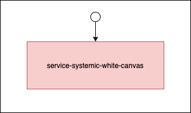

Matteo Di Paolantonio 10/07/2020
“ A minimal dependency injection library ”
Created bearing in mind the
for building software-as-a-service apps
system
const components = path.join(__dirname, 'components')
const exampleSystem = () => new System({ name: 'exampleSystem' }).bootstrap(components);
runner
runner(exampleSystem(), { logger: emergencyLogger }).start((err, components) => {
if (err) {
emergencyLogger.error(err, message);
process.exit(1);
}
logger.info('The system has started');
});
manifest
const loggerSystem = () => new System({ name: 'loggerSystem' })
.add('logger', logger())
.dependsOn('config')
component
const logger = () => {
const start = async ({config}) => {
console.log(`starting logger with config: ${config}`);
return console
};
const stop = async () => {
console.log('stopping logger');
};
return { start, stop };
};
“ A generator for a systemic microservice ”
yo systemicyo systemic --showcase
A white canvas service into which creating the components you do prefer according to your specific business logic.
Out-of-the-box non-business-logic-related components
Config - Logger - ServerA not so white canvas with a given business logic already in place to help you better understand how to get the best out of Systemic.